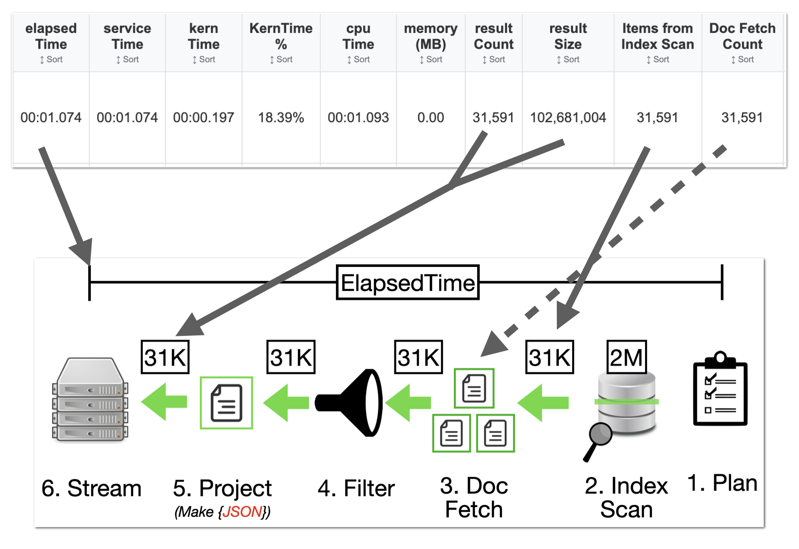
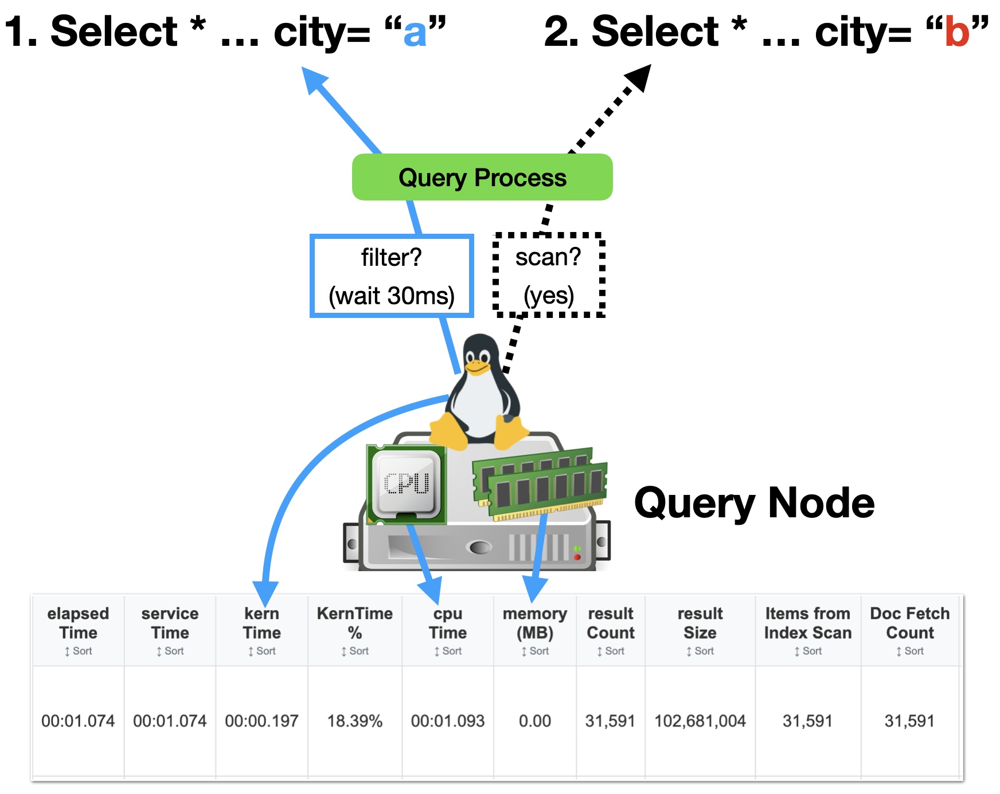
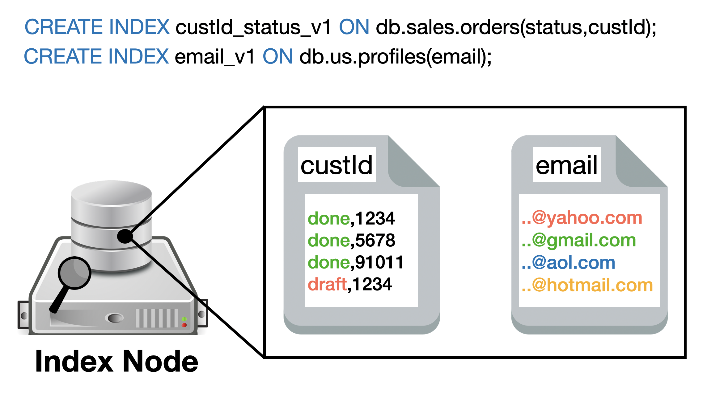
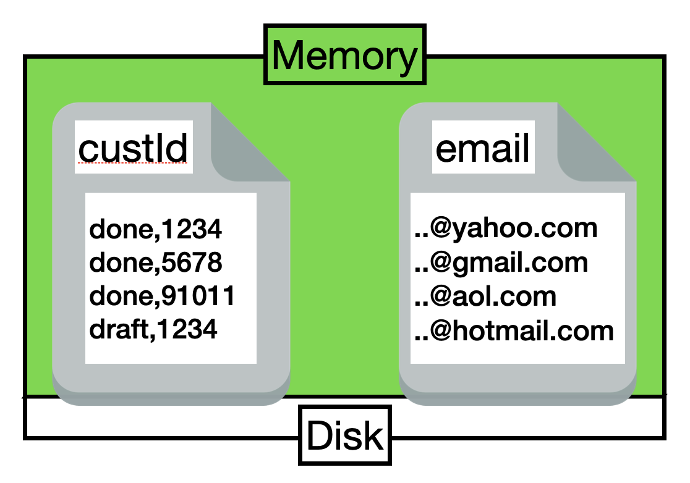
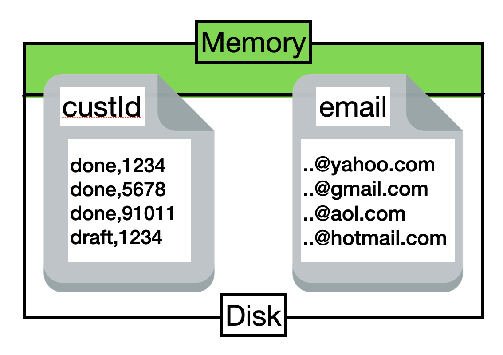

Couchbase Query Performance Debugging
"Why Is My Query Slow?"
Last updated: September 1, 2025
📖 Introduction
Welcome to the Couchbase Query Analysis Tool documentation hub!
You're probably here because you clicked this link NEED HELP? Debugging + Tool Tips and want to:
- Understand how to use the Couchbase Query Analyzer to optimize your queries
- Diagnose performance issues and identify bottlenecks
- Gain deeper insights into query execution and system metrics
This tool helps you visualize and interpret query statistics, execution plans, and system metrics, making it easier to identify bottlenecks and apply best practices for high-performance querying in Couchbase.
🎯 What You'll Learn: Whether you're new to N1QL/SQL++ or an experienced user, this hub provides step-by-step guidance, practical examples, and advanced tips to elevate your query game.
📊 Parse JSON
The Parse JSON feature allows you to analyze query results and apply advanced filtering directly within the Query Analyzer tool. Multiple filtering options help you focus on specific data subsets for targeted analysis.
🔧 Available Filters & Controls
The Parse JSON section provides several filtering options to refine your analysis:
✅ Exclude System Queries
Default: Enabled - Automatically filters out system-level operations like INFER, ADVISE, CREATE/ALTER INDEX statements, and queries from system: keyspaces. Keeps your analysis focused on application queries.
📅 Date/Time Range Filtering
Precise temporal filtering with datetime controls:
- From/To Dates: Specify exact datetime ranges with second precision
- Quick Time Buttons: Original | 1 Week | 1 Day | 1 Hour for instant filtering
- Time Zone Aware: Uses local browser timezone for accurate filtering
🔍 SQL++ Statement Filter
Text-based filtering using "Filter SQL++ Contains..." - searches within the actual SQL++ statement text to find queries containing specific keywords, table names, or patterns. Case-insensitive substring matching.
Advanced Option: In the filter input, enter SQL strings like WHERE type = 'invoice' AND status LIKE 'pending%' to subset the data with N1QL-like expressions for post-parsing filtering.
⚡ Performance Tips
- Filter Early: Use datetime and system query filters before parsing for faster processing
- Large Datasets: Consider server-side LIMIT and WHERE clauses in your original system:completed_requests query
- Memory Usage: The tool processes data in-memory - very large JSON files (>100MB) may affect browser performance
- Progressive Filtering: Apply broad filters first (date range), then narrow with SQL string filters
🔧 Analyzer Tool Tabs
The Couchbase Query Analyzer provides multiple tabs with specialized features to help you analyze query performance and troubleshoot issues from different perspectives.
📊 Dashboard
High-level overview with draggable charts showing query duration distribution, index type usage, scan consistency patterns, result size analysis, and system health metrics. Perfect for at-a-glance performance monitoring.
💡 Insights Tab
The Insights tab provides automated analysis organized into three main categories, each with expandable insights and live metrics based on your parsed query data:
📊 Analysis Categories
🔍 Index Performance Issues
- Inefficient Index Scans - Identifies queries with poor selectivity ratios
- Slow Index Scan Times - Flags indexes taking 2+ seconds to scan
- Primary Index Over-Usage - Detects reliance on expensive primary indexes
⚡ Resource Utilization Issues
- High Kernel Time in Queries - CPU scheduling overhead analysis
- High Memory Usage Detected - Memory-intensive query identification
- Slow USE KEY Queries - KV service bottleneck detection
🔄 Query Pattern Analysis
- Missing WHERE Clauses - Identifies full collection scans
- Complex JOIN Operations - Analyzes join performance patterns
- Inefficient LIKE Operations - Detects leading wildcard usage
🚀 Performance Optimization Opportunities
- Large Payload Streaming - Identifies queries with heavy network usage
- Large Result Set Queries - Flags memory and bandwidth intensive operations
- Timeout-Prone Queries - Detects queries approaching timeout limits
💡 Live Data: Insights marked with Live analyze your actual parsed data, while Beta insights are experimental and may show false positives.
⏰ Timeline
Chronological analysis with zoomable time-series charts. Track query patterns by time grouping (seconds to days), analyze duration buckets, operation types, result counts, and memory usage trends over time with dual Y-axis support.
🔍 Query Groups
Analyze similar queries grouped by normalized patterns. Compare aggregated statistics, identify frequently executed query types, and optimize query families that share similar execution characteristics and performance profiles.
📋 Every Query
Detailed tabular view of individual query executions with sorting, filtering, and search capabilities. Drill down into specific query metrics, execution plans, and performance details for granular analysis and debugging.
🌊 Index/Query Flow
Interactive visual flow diagram showing the relationship between indexes and queries. See which indexes are used by which queries, identify index usage patterns, and optimize index coverage with drag-and-pan visualization.
🗂️ Indexes
Comprehensive index management with filtering by bucket/scope/collection. Analyze index performance metrics, memory residency, scan times, and usage patterns. Includes search and sorting capabilities for large index inventories.
📋 Data Requirements
Separate Query Required: You'll need to run a separate SQL++ query to get index information from your system and JOIN it with the slow query JSON data.
The Indexes tab uses data from both system:completed_requests and system:indexes to provide comprehensive index analysis.
📊 Understanding Query Statistics: Reading the Performance Data
The statistics table in our tool provides crucial performance metrics that help you identify bottlenecks and measure optimization success. This section explains what each metric means and how to interpret them.

📋 How to Use This Section
This guide is organized into logical sections that build upon each other. Start with timing metrics to understand the overall query timeline, then dive into specific metrics for detailed analysis.
⏱️ Query Timing Overview
Understanding timing relationships is crucial for performance analysis. These diagrams show how all timing metrics relate to each other in the query execution lifecycle.

🔍 ServiceTime in Context
ServiceTime represents the actual query execution phases. This detailed view shows how the query flows through each phase and how these phases sum up to create the overall timing metrics.

🕐 Core Timing Metrics
📊 Understanding How Timing Metrics Relate:
- elapsedTime - Total wall-clock time from request acknowledgment to completion
- serviceTime - Time Query service waits for other services (Index, Data, FTS)
- executionTime - Actual time to execute the query logic
- cpuTime - Cumulative CPU consumption across all query threads
- kernTime - Time spent waiting for CPU scheduling by the OS kernel
💡 Refer to these timing diagrams when reading individual metric explanations below. The first shows metric relationships, the second shows detailed execution phases.
🖥️ System & Node Architecture Impact
Query performance is heavily influenced by the underlying system architecture, node configuration, and resource allocation. Understanding these relationships helps identify infrastructure-level bottlenecks.

📊 System Performance Metrics
- resultCount - Number of documents returned to the client
- resultSize - Total size in bytes of the result set (affects network transfer time)
- errorCount - Number of errors encountered during execution
- usedMemory - Peak memory consumption during query execution (in bytes)
🏗️ Node Architecture Factors
- CPU Core Count: More cores reduce contention but require balanced thread distribution
- Memory Allocation: Index Service memory affects query performance
- Service Co-location: Query and Index services on same node can impact resource competition
- Network Bandwidth: Large resultSize values require adequate network capacity
⚙️ Query Execution Phases
Couchbase queries execute through distinct phases, each with specific metrics. Understanding phase-level performance helps pinpoint exactly where optimization is needed.
📋 Phase-Level Metrics
- phaseCounts - Count of items processed in each phase (fetch, indexScan, sort, etc.)
- phaseOperators - Number of operators used in each phase
- phaseTimes - Time spent in each query execution phase
Common Phase Types:
indexScan, fetch, project, sort, authorize, parse, plan, run, stream
🔍 Advanced Profiling
For detailed breakdowns, enable profiling with profile="timings". This exposes operator-level metrics:
- execTime - Code execution time within operators
- servTime - Time waiting on services (KV, Index)
- kernTime - OS scheduling overhead per operator
🎯 Connecting Statistics to Optimization Levels
These statistics patterns correspond directly to the Crawl, Walk, Run optimization approach. Use these benchmarks to measure your optimization progress and identify the next steps.
🔧 Practical Performance Analysis
Use these practical tips and success metrics to diagnose performance issues and track your optimization progress effectively.
📈 Measuring Optimization Success
Track these key improvements as you progress through optimization levels:
- CRAWL → WALK: Watch for 30-50% reduction in
phaseCounts.fetch and phaseTimes.fetch
- WALK → RUN: Achieve
phaseCounts.fetch = 0 and 70-90% reduction in serviceTime
- Overall Success: Lower elapsedTime, reduced kernTime, consistent
resultCount
- Efficiency Gains: Lower
resultSize-to-resultCount ratio, minimal usedMemory
Performance Optimization: Crawl, Walk, Run Approach
Optimizing Couchbase queries follows a progressive approach - start simple, then incrementally improve. Each step builds upon the previous one to achieve better performance.
🎯 Query Tuning Best Practices
- Start Simple: Begin with basic indexes, measure performance
- Measure Impact: Use
EXPLAIN and profiling data to validate improvements
- Index Strategy: Filter fields first, then SELECT fields for covering
- Iterative Approach: Make one change at a time, measure results
- Monitor Resources: Watch CPU, memory, and I/O patterns after changes
🏆 PRO TIPS
🔍 LIKE vs REGEXP_LIKE vs SEARCH(): Pattern Matching Comparison
In Couchbase N1QL/SQL++, LIKE, REGEXP_LIKE, and SEARCH() offer pattern-matching capabilities, but they differ in functionality, performance, and use cases.
| Feature |
LIKE |
REGEXP_LIKE |
SEARCH() |
| Syntax |
Simple wildcard matching with % and _ |
Full regular expression support |
FTS integration with indexes |
| Performance |
Fastest - uses indexes efficiently |
Slower - 10-100x overhead |
Efficient with FTS index |
| Use Cases |
Basic filters, operational queries |
Complex patterns, use sparingly |
Full-text search, autocomplete |
| Optimization |
Index fields, avoid leading wildcards |
Small collections, test with EXPLAIN |
Pair with FTS, use analyzers |
💡 Quick Guide: Start with LIKE for speed and simplicity. Escalate to REGEXP_LIKE only for unavoidable complex patterns, and prefer SEARCH() for scalable text search with proper indexing. Always profile queries—LIKE without wildcards is near-instant, while unoptimized regex can timeout on large buckets.
📋 Understanding Couchbase Indexes
Indexes are the foundation of query performance in Couchbase. Understanding how indexes work, how they're stored, and how memory affects their performance is crucial for optimal query tuning.
🗃️ What is a Couchbase Index?
A Couchbase index is a data structure that creates shortcuts to your documents, allowing queries to find data efficiently without scanning entire buckets. When you create indexes with CREATE INDEX statements, they are stored and managed by the Index Service.

🏗️ How Index Creation Works
As shown in the diagram above, when you execute CREATE INDEX statements:
- custId_status_v1: Creates an index on
(status, custId) fields, organizing data like "done,1234", "done,5678", "draft,1234"
- email_v1: Creates an index on
(email) field, organizing data like "@yahoo.com", "@gmail.com", "@aol.com"
- Index Node Storage: All indexes are stored on dedicated Index Service nodes
- Key-Value Organization: Each index maintains sorted key-value pairs for fast lookups
- Document References: Index values point to document keys (like 1234, 5678) for quick document retrieval
💾 Index Memory Usage: The Performance Game-Changer
The percentage of your index stored in memory directly impacts query performance. Higher memory residency means faster query execution, while lower memory residency can lead to disk I/O and slower responses.
🚀 High Memory Residency (90%+)

Optimal Performance: Most index data is in RAM, resulting in fast lookups and minimal disk I/O. Ideal for frequently accessed indexes.
⚠️ Low Memory Residency (20-40%)

Performance Impact: Frequent disk reads required, leading to higher latency and reduced throughput. Consider increasing memory allocation.
🎯 Index Memory Optimization Strategies
💡 Memory Optimization Tips
- Monitor Memory Residency: Use our tool to track what percentage of your indexes are in memory
- Increase Index RAM: Allocate more memory to the Index Service for frequently used indexes
- Index Selectivity: Create more selective indexes to reduce overall memory footprint
- Partition Indexes: Use partitioned indexes to distribute memory load across nodes
- Archive Old Data: Remove or separate historical data that doesn't need high-performance access
📈 Index Performance Impact
Memory residency directly affects:
- Query Latency: In-memory indexes respond 10-100x faster than disk-based lookups
- Throughput: Higher memory residency allows more concurrent queries without performance degradation
- CPU Usage: Less CPU spent waiting for disk I/O when indexes are in memory
- Consistency: Predictable performance when indexes don't compete for disk resources
⚠️ Drawbacks of Primary Indexes
While primary indexes in Couchbase provide a basic way to scan all documents in a bucket by their keys, they come with significant drawbacks that make them unsuitable for most production scenarios. Primary indexes lead to very slow performance because they fetch all documents across all types in the bucket before applying filters, resulting in unnecessary I/O, memory, and CPU waste.
- Performance Impact: Excessive document retrievals and post-scan filtering make operations "VERY EXPENSIVE"
- Resource Waste: Unnecessary I/O, memory, and CPU consumption
- Not Recommended: The Couchbase index advisor never recommends primary indexes
- Better Alternatives: Secondary or composite indexes are almost always more efficient
Recommendation: Avoid primary indexes in production—use them only for initial data exploration or when no other index applies, and opt for targeted secondary indexes to minimize latency and resource usage.
⚠️ Drawbacks of Sequential Scans
Sequential scans in Couchbase involve scanning documents directly without an index, which can be simple but comes with performance limitations. "Sequential scans are intended for simple, ready access to data, and are not intended as a high performance solution."
- Limited Use Cases: Best suited to small collections where key order is unimportant
- Index Overhead: Only when the overhead of maintaining an index can't be justified
- Performance Issues: Lead to full bucket traversals, high latency, and increased resource consumption
- Primary Index Alternative: For ordered document key operations, a primary index provides the same functionality and will outperform a sequential scan
Recommendation: Avoid sequential scans for large datasets or frequent queries—always prioritize indexing for scalability.
-- `executionTime`
ExecutionTime refers to the actual time taken to execute the query logic within the Query service. This represents the pure computational time spent processing the query—parsing, planning, and running the SQL++ operations—without including time spent waiting for other services or transmitting results to the client.
📊 Timing Context:
Hover over diagram to see how executionTime fits within the overall query timeline
⚙️ ExecutionTime Components
ExecutionTime captures the core query processing phases:
- Parse: SQL++ statement parsing and validation
- Plan: Query plan generation and optimization
- Execute: Actual query operation processing (joins, filters, projections)
Think of it like this: Imagine cooking a meal—executionTime is the actual time you spend actively cooking (chopping, stirring, seasoning), not the time waiting for water to boil or for ingredients to be delivered.
What High ExecutionTime Means for Query Performance
High ExecutionTime indicates that the query logic itself is computationally intensive or inefficient, pointing to optimization opportunities within the query processing:
- Complex query logic: Intricate JOINs, nested queries, or complex expressions requiring substantial computation.
- Large data processing: Operations on large result sets that require significant in-memory processing.
- Inefficient query plans: Suboptimal execution plans that could benefit from better indexing or query rewriting.
- Resource-intensive functions: Heavy use of user-defined functions, regular expressions, or mathematical computations.
- Sort and aggregation overhead: ORDER BY or GROUP BY operations on large datasets without optimal indexes.
Optimizing High ExecutionTime
When executionTime is the primary contributor to slow queries:
- Review query plan: Use
EXPLAIN to identify inefficient operations and optimize with better indexes
- Simplify query logic: Break complex queries into simpler components or use more efficient SQL++ constructs
- Add covering indexes: Eliminate expensive fetch operations by including all needed fields in indexes
- Optimize data access: Use appropriate index hints and ensure queries leverage the best available indexes
- Consider data modeling: Sometimes restructuring documents can simplify query logic and improve execution efficiency
🔍 ExecutionTime vs Other Metrics
- If executionTime ≈ elapsedTime: Query processing dominates, minimal waiting and transmission time
- If serviceTime >> executionTime: Query spends more time waiting for services than actual processing
- If elapsedTime >> executionTime: Significant queuing delays or large result transmission time
-- `kernTime`
KernelTime (often abbreviated as kernTime in query profiling statistics) refers to the amount of time a query operator or phase spends waiting to be scheduled for execution on a CPU core by the operating system's kernel. This is essentially idle time due to scheduling delays in a multi-threaded environment, where multiple threads or processes are competing for limited CPU resources. It's not time spent doing actual computation or waiting on external services (like data fetches or index scans); instead, it's the overhead from the system deciding when and how to allocate CPU cycles to the query's threads.
Think of it like this: Imagine a busy highway with more cars (threads) than lanes (CPU cores). KernelTime is the time your car (the query) spends stopped or slowed down in traffic, waiting for a lane to open up, rather than driving forward productively.
🖥️ Query Node Impact on KernTime
Understanding how kernTime relates to query node architecture helps identify the root causes of CPU scheduling delays. The relationship between query nodes, CPU resources, and thread management directly impacts kernTime performance.
🖥️ Node Architecture:
Hover to see query node architecture and resource impact
Node-Level Factors Affecting KernTime
- CPU Core Count: More cores reduce contention but require balanced thread distribution
- Memory Pressure: Low memory forces more aggressive scheduling and context switching
- Node Load: High concurrent query load increases thread competition for CPU time
- Service Mixing: Query nodes also running KV/Index services compete for CPU resources
What a High KernelTime Means for a Slow Query
A high KernelTime indicates that CPU contention is a primary bottleneck contributing to the query's slowness. This doesn't mean the query itself is inefficient in terms of logic or data access—instead, it points to systemic issues on the query node or cluster, such as:
- Overloaded CPU resources: Too many concurrent queries, threads, or background processes (e.g., garbage collection, other services) are vying for CPU time, causing scheduling delays.
- Insufficient CPU cores: The node might have fewer logical cores than needed for the workload, leading to frequent context switches and queuing.
- High thread counts: As seen in system:vitals (e.g.,
total.threads), an excessive number of active threads can exacerbate scheduling overhead.
- Resource imbalance: If CPU utilization (from system:vitals, like
cpu.user.percent or cpu.sys.percent) is consistently high, or if the load factor is elevated, this amplifies KernelTime.
In profiling data (e.g., from system:active_requests or meta().plan), compare KernelTime to other metrics like execTime (actual computation time in the query engine) and servTime (time waiting on services like KV or indexes). If KernelTime dominates, the query isn't slow because of data volume or complex operations—it's slow because it's starved for CPU. To diagnose:
- Check system:vitals for CPU metrics, thread counts, and garbage collection pauses.
- Look at phaseTimes in active/completed requests to see which phases (e.g., fetch, sort) have high KernelTime.
- Monitor for patterns across queries; if many show high KernelTime, scale up CPU resources, reduce concurrency, or isolate workloads.
Example: If KernelTime Equals 99% of ServiceTime
ServiceTime is the total wall-clock (calendar) time taken to complete the query, from start to finish. If KernelTime accounts for 99% of this (e.g., ServiceTime = 10 seconds, KernelTime = 9.9 seconds), it strongly indicates severe CPU overload or contention on the query node. Practically, this means:
- The query is doing almost no useful work—only about 1% of the time is spent on actual execution (
execTime) or service calls (servTime).
- The system is thrashing: Threads are constantly being paused and rescheduled, leading to inefficiency and potential cascading slowdowns across the cluster.
- Root causes could include an under-provisioned node (low
cores in system:vitals), too many active requests (request.active.count), or external factors like high garbage collection (gc.pause.percent).
- Implications: This query (and others) will perform poorly until CPU pressure is relieved. Recommendations include adding more query nodes, optimizing query concurrency (e.g., via request quotas), or investigating non-query processes consuming CPU. Use tools like system:active_requests to terminate long-running queries contributing to the overload.
-- `scanConsistency`
ScanConsistency determines the level of consistency required between the index and the data service when executing queries. This parameter controls whether queries use the most current data or can accept slightly stale index information for better performance.
Think of it like this: Imagine reading a news website—scanConsistency is like choosing between reading the latest breaking news (which might take longer to load) versus reading news that's a few minutes old (which loads instantly).
🔄 Index Consistency Fundamentals
Couchbase maintains indexes with eventual consistency. While data mutations are immediately available, indexes may not contain the most up-to-date information, especially in write-heavy environments. This asynchronous updating nature allows indexes to be very quick to query without the overhead of real-time recalculations.
ScanConsistency Options
not_bounded (unbounded)
Default for SQL++. Executes the query immediately without requiring any consistency. Provides the best performance but may return out-of-date results if index maintenance is running behind.
at_plus (scan_plus)
Executes the query after updating indexes to the timestamp of the last update. Query waits for index maintenance to catch up if it's running behind.
request_plus
Strongest consistency. Executes the query after updating indexes to the timestamp of the current query request. Ensures indexes are synchronized with the data service before querying, but may have performance impact.
Performance Impact of ScanConsistency
The choice of scanConsistency directly affects query performance and data freshness:
- not_bounded/unbounded: Fastest execution, potential for stale data
- at_plus: Moderate performance impact, ensures recent updates are visible
- request_plus: Highest performance cost, guarantees latest data visibility
⚖️ Choosing the Right Consistency Level
- Use unbounded for analytics, reporting, and read-heavy workloads where slight staleness is acceptable
- Use at_plus when you need recent updates reflected, but can tolerate some delay
- Use request_plus for critical operations requiring absolute data freshness, despite performance cost
-- `serviceTime`
ServiceTime refers to the cumulative time the Query service spends waiting for other services to respond during query execution. From the Query service perspective, when it needs to perform operations like index scans or document fetches, it makes requests to other services (Index service, Data service, FTS service) and waits for their responses—this waiting time is captured as serviceTime.
📊 Visual Context: The diagram above shows detailed execution phases. For timing relationships:
Hover to see how serviceTime relates to all timing metrics
serviceTime = elapsedTime (00:01.074) in this example indicates minimal queuing overhead.
🔄 Query Service Dependencies
The Query service coordinates with multiple other services:
- Index Service: For index scans and lookups
- Data Service: For document fetches from KV store
- FTS Service: For full-text search operations (less common)
📝 serviceTime vs executionTime vs elapsedTime
- serviceTime: Sum of all query execution phases (Plan + Index Scan + Doc Fetch + Filter + Project + Stream)
- elapsedTime: serviceTime + any queuing delays + result transmission time
- executionTime: Internal query processing time (may differ from serviceTime in some contexts)
Key insight: When serviceTime ≈ elapsedTime (as shown: 00:01.074), there are minimal queuing delays and the query executes efficiently.
Think of it like this: Imagine ordering at a restaurant—serviceTime is how long you wait for the kitchen and bar to prepare your food and drinks, not the time you spend eating or the time it takes to bring your order to your table.
What a High ServiceTime Means for a Slow Query
A high ServiceTime indicates that the query execution phase itself is the main contributor to slowness, often due to operational complexities or dependencies on other services. This could stem from issues within the query processing, such as:
- Complex query operations: Large data scans, intricate joins, sorts, or aggregations that require significant processing.
- Delays in dependent services: Waiting on the indexer (GSI) for scans or the KV store for fetches, as reflected in
servTime.
- Resource contention within services: High load on index or data nodes leading to slower responses.
- Inefficient query plan: Suboptimal index usage or lack of covering indexes, forcing more work during execution.
In profiling data (e.g., from system:completed_requests or executionTimings), compare ServiceTime to metrics like execTime (computation time) and servTime (service waits). If ServiceTime is dominated by servTime, the bottleneck is external services; if by execTime, it's internal computation. To diagnose:
- Review phaseTimes and phaseOperators to identify slow phases (e.g., fetch or indexScan).
- Check system:vitals for service-related metrics like memory usage or network utilization.
- Analyze patterns in completed requests; if many queries show high ServiceTime, optimize indexes, tune query plans, or scale service resources.
Example: If ServiceTime Equals 99% of ElapsedTime
ElapsedTime is the total time from query acknowledgment to completion, including scheduling. If ServiceTime accounts for 99% of this (e.g., ElapsedTime = 10 seconds, ServiceTime = 9.9 seconds), it means minimal queuing delay, and the slowness is almost entirely due to execution. Practically, this means:
- The query spends nearly all its time in active processing, with little wait before starting.
- Potential overload in execution resources, leading to prolonged runs and reduced throughput.
- Root causes could include inefficient queries, large datasets, or stressed index/KV services.
- Implications: Queries will remain slow without optimization. Recommendations include rewriting queries for efficiency, creating better indexes, or distributing load across more nodes. Use tools like EXPLAIN or profiling to pinpoint and refactor slow operators.
-- `elapsedTime`
ElapsedTime refers to the total end-to-end time from when the query request is acknowledged by the query service until the complete results are delivered to the client. This encompasses queuing delays, query execution time, and crucially, the time required to transmit results back to the client over the network.
📊 Timing Context:
Hover over diagram to see how elapsedTime relates to other timing metrics
⏱️ ElapsedTime Components
- Queuing time: Time waiting in queue before execution starts
- Execution time: Time to process the query logic
- Result transmission: Time to send results to client over network
Think of it like this: Imagine ordering food delivery—ElapsedTime is the total wait from placing the order until it's delivered to your door, including restaurant queue time, cooking time, and delivery transportation time.
What a High ElapsedTime Means for a Slow Query
A high ElapsedTime signals overall delays in the complete query lifecycle, which could be due to several factors depending on how it compares to executionTime:
🔍 ElapsedTime Analysis Patterns
- elapsedTime ≈ executionTime: Minimal queuing and fast result transmission
- elapsedTime >> executionTime: Either queuing delays OR large result sets with slow network transmission
- elapsedTime much larger than expected: Check resultSize—large datasets take time to transmit to client
Common causes of high ElapsedTime include:
- Queue backlogs: Too many concurrent requests overwhelming the service, as indicated by high
request.queued.count.
- Large result sets: High
resultSize requiring significant time for network transmission to client.
- Network latency/bandwidth: Slow network connections between Query service and client causing transmission delays.
- Scheduling overhead: Delays in assigning resources, often linked to high load or limited servicers.
- Execution bottlenecks: If close to ServiceTime, the issue is in processing; otherwise, it's queuing or transmission.
In metrics (e.g., from system:active_requests), compare ElapsedTime to ServiceTime—if ElapsedTime is much higher, queuing is the culprit. Also check request_time percentiles for trends. To diagnose:
- Monitor system:vitals for request rates and queue counts.
- Examine active_requests for stuck queries contributing to backlogs.
- Look for patterns; if widespread, increase servicers, add nodes, or limit concurrency via quotas.
Example: If ElapsedTime is Significantly Higher Than ServiceTime
For instance, if ElapsedTime = 10 seconds and ServiceTime = 2 seconds, it means 80% of the time (8 seconds) was spent waiting in queue. This indicates severe overload. Practically, this means:
- Queries are bottlenecked before even starting, reducing effective throughput.
- The system appears unresponsive, as requests pile up.
- Root causes could include insufficient servicers (defaults to 4x cores) or bursty workloads.
- Implications: Performance degrades under load. Recommendations include scaling query nodes, tuning servicers, or using prepared statements to reduce overhead. Terminate queued queries via system:active_requests if needed.
-- `cpuTime`
CPUTime refers to the cumulative time spent by the query consuming CPU resources during its execution. This metric aggregates the CPU usage across all threads involved in processing the query, including both user-level computations in the query engine and system-level operations. It's a measure of the query's CPU footprint, often reflecting the intensity of operations like sorting or filtering.
ℹ️ Availability Note
cpuTime availability: This metric is primarily available through system monitoring catalogs (system:active_requests, system:completed_requests). It may not appear in basic query meta() output without additional profiling enabled.
Think of it like this: Imagine running a marathon—CPUTime is the total effort (energy) expended by the runner, which may exceed the race time if accounting for all movements, but in queries, it's the CPU "work" done.
🖥️ Node Architecture:
Hover to see query node CPU architecture and resource impact
What a High CPUTime Means for a Slow Query
A high CPUTime suggests the query is CPU-bound, consuming significant processor resources, which can lead to slowness if CPUs are contended. This doesn't always correlate directly with wall-clock time in parallel environments but indicates issues like:
- CPU-intensive operations: Heavy computations, large sorts, or aggregations without proper optimization.
- Parallelism overhead: Multi-threaded execution where total CPU exceeds wall time.
- System-wide CPU strain: Combined with high
cpu.user.percent or cpu.sys.percent, it points to overload.
- Inefficient code paths: Loops or functions in user-defined functions eating CPU.
In profiling (e.g., executionTimings), relate CPUTime to execTime across operators. If high, the query is computation-heavy. To diagnose:
- Check system:vitals for overall CPU metrics and gc pauses.
- Analyze phaseTimes for CPU-heavy phases like project or sort.
- Monitor across queries; if aggregate CPUTime is high, upgrade hardware or optimize queries.
Example: If CPUTime Equals 99% of ServiceTime
ServiceTime is wall-clock execution time. If CPUTime is 99% of this (e.g., ServiceTime = 10 seconds, CPUTime = 9.9 seconds), it means the query is almost fully CPU-bound with minimal waits. Practically, this means:
- Nearly all time is spent computing, with little I/O or service delay.
- The system is efficient in scheduling but the workload is processor-intensive.
- Root causes could include unoptimized expressions or large in-memory operations.
- Implications: CPU becomes the limiting factor. Recommendations include simplifying queries, using indexes to reduce data, or leveraging more cores. Watch for heat on nodes and balance load.
-- `state`
State indicates the current execution status of a query request within the Couchbase query service. This field provides real-time visibility into where a query stands in its lifecycle, helping administrators and developers track query progress and identify stuck or problematic queries.
Think of it like this: Imagine tracking a package delivery—state is like the shipping status that tells you whether your package is "in transit," "delivered," or "delayed."
Query State Values
completed
The query has finished execution successfully and results are available. This is the final state for successful queries.
running
The query is currently being executed. Monitor queries in this state to identify long-running operations that may need optimization or termination.
cancelled
The query was manually terminated by an administrator or client before completion. This often happens when queries are taking too long or consuming excessive resources.
timeout
The query exceeded the configured timeout limit and was automatically terminated by the system.
Default: Couchbase SDK clients have a default timeout of 75 seconds (1m15s).
error
The query encountered an error during execution and could not complete successfully. Check the errors field for specific error details.
Using State for Query Management
The state field is particularly valuable for query monitoring and management:
- Identify stuck queries: Queries in "running" state for extended periods may need investigation
- Monitor system health: High numbers of "cancelled" or "error" states indicate potential issues
- Resource management: Use with system:active_requests to terminate problematic running queries
- Performance analysis: Compare state distribution across different time periods
📊 State in Monitoring Context
State appears in both system:active_requests (for currently executing queries) and system:completed_requests (for finished queries). This field is sourced from the Couchbase N1QL REST API vitals endpoint.
- Use with
requestId to track specific queries across state transitions
- Combine with timing metrics to understand performance patterns by state
- Monitor state changes to detect system overload or configuration issues
-- `usedMemory`
UsedMemory refers to the peak amount of document memory consumed during query execution, measured in bytes. This metric tracks the maximum memory footprint required by the query for processing documents, intermediate results, and temporary data structures. It provides insight into the memory efficiency of query operations and helps identify memory-intensive queries that could impact system performance.
ℹ️ Availability Note
usedMemory availability: This metric is only returned when a memory quota is set for the query using the memory_quota parameter. Without a quota, this field won't appear in query statistics.
Think of it like this: Imagine organizing a large event—UsedMemory is the maximum venue capacity you needed at any point during the event, not the average occupancy, but the peak moment when the most space was required.
🖥️ Node Architecture:
Hover to see query node memory architecture and resource impact
What High UsedMemory Means for a Slow Query
High UsedMemory suggests the query requires significant memory resources for processing, which can impact performance through memory pressure, garbage collection overhead, or system swapping. This could indicate several issues:
- Large result sets: Queries returning many documents or large document payloads consume more memory for buffering.
- Complex operations: JOINs, UNNESTs, or aggregations on large datasets require substantial intermediate storage.
- Sorting operations: ORDER BY clauses on large result sets need memory to hold data during sorting.
- Inefficient queries: Lack of proper indexing forcing the query to process more data than necessary.
- Memory quota pressure: When approaching the configured memory_quota, queries may slow due to memory management overhead.
In profiling data (e.g., from system:completed_requests), compare UsedMemory to the configured memory quota and resultSize. Monitor for patterns where high memory usage correlates with slower execution times. To diagnose:
- Check if queries are hitting memory_quota limits, causing potential spilling or throttling.
- Compare usedMemory to resultSize—inefficient ratios suggest optimization opportunities.
- Look for patterns where usedMemory grows with specific query patterns or data sizes.
- Monitor system-wide memory pressure via system:vitals memory metrics.
Example: If UsedMemory Approaches Memory Quota
If a query's UsedMemory approaches or exceeds 80% of the configured memory_quota (e.g., memory_quota = 100MB, UsedMemory = 85MB), it indicates potential memory pressure. Practically, this means:
- The query is consuming most of its allocated memory budget, increasing risk of memory-related slowdowns.
- Additional memory requests may trigger garbage collection or memory management overhead.
- In extreme cases, queries may be terminated if they exceed hard memory limits.
- Root causes could include queries processing more data than expected, lack of result limits, or inefficient query patterns.
- Implications: Consider optimizing the query with better indexes, adding LIMIT clauses, or increasing the memory quota. Review the query plan to identify memory-intensive operations like large sorts or aggregations.